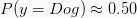

Convolutional Neural Networks in R
Want to share your content on R-bloggers? click here if you have a blog, or here if you don't.

Last time I promised to cover the graph-guided fused LASSO (GFLASSO) in a subsequent post. In the meantime, I wrote a GFLASSO R tutorial for DataCamp that you can freely access here, so give it a try!
The plan here is to experiment with convolutional neural networks (CNNs), a form of deep learning. CNNs underlie most advanced recognition algorithms used by the major tech giants. The recent development of back-end optimization tools and hardware (from Intel, NVIDIA and Google to name a few) now enables training CNNs on conventional laptop machines, hence accessible to a broader audience.
Today you will construct a binary classifier that can distinguish between dogs and cats from a set of 25,000 pictures, using the Keras R interface powered by the TensorFlow back-end engine. The code is available from a dedicated repo so you don’t have to copy-paste the snippets below. If you fall short of RAM please consider adapting the script as to use less pictures or split, process and save them in separate instances. Finally, I encourage you to use the RStudio terminal shell to fetch the Dogs vs. Cats dataset from Kaggle via its new API feature. I will provide more detailed instructions below. If you want to pass the theory, scroll all the way down to the “Let’s get started with R” section. Enjoy!
Neural Networks
Driverless cars were out there as far back as 1989. Neural networks (NNs) have been around for a long time, so what triggered this craze around artificial intelligence and deep learning in recent years? The answer partly lies in Moore’s law and the remarkable improvement of hardware and computing power – we can now do a lot more with a lot less. The concept of NNs, as the name suggests, was inspired by the network of our own brain neurons. Neurons are very long cells, each with protrusions called dendrites that receive and propagate electrochemical signals from and to surrounding neurons, respectively. As a result, our brain cells form flexible, robust communication networks that sequentially process cascading inputs. This distributive process, akin to an assembly line, is supportive of sophisticated cognitive abilities such as music playing and painting.
There is enough about NNs to write books and I do not intend to re-invent the wheel here. There are great free resources you can learn from, to master both basic and advanced concepts. I recommend the Intel® AI Academy, the Coursera Machine Learning course taught by Andrew Ng and DataCamp for the Python enthusiasts. I will cover only some key features pertaining to classification problems.
Basic architecture
A NN typically contains one input layer, one or more hidden layers, and an output layer. The input layer consists of your p predictors, or input units / nodes. Needless to say, it is generally good practice to center, scale and transform predictors, if not at least to speed up the optimization procedure. These input units can be connected to one or more hidden units in the first hidden layer. A hidden layer that is fully connected to the preceding layer is designated dense. In the diagram below, both hidden layers are dense.

The output layer computes the prediction, and the number of units therein is determined by the problem in hands. Conventionally, a binary classification problem requires a single output unit (as shown above), whereas a multiclass problem with k classes will require k corresponding output units. The former can simply use a sigmoid function to directly compute a probability, while the latter usually requires a softmax transformation, whereby all values across all k output units sum up to one and can thus be treated as probabilities. Rather than having categorical predictions you can retrieve the actual probabilities, which are much more informative, and inspect their quality using calibration plots and lift charts. These can be discussed in a future tutorial.
Weights
Every arrow displayed in the diagram above passes on an input that is associated with a weight. Each weight is essentially one of many coefficient estimates that contribute to the regressions computed in the nodes the corresponding arrows point to. These are unknown parameters that must be tuned by the model as to minimize the loss function, using an optimization procedure. In effect, for any particular observation each neuron can be mathematically represented as 
Activation functions
So far we have been assuming each unit carries a linear regression model, but there is more to that. Every hidden unit is equipped with a sort of toggle switch that applies a filter on the regression output. In this context, different types of toggle switches are designated activation functions, i.e. ")
Loss and optimization
So far we worked our way downstream the network, covering most elements necessary to make a prediction. However, we still did not discuss the actual training and weight fine-tuning. We need two things in place prior to training: i) a measure of goodness-of-fit, that compares predictions and known labels over all training observations, and ii) an optimization method that computes the gradient descent, essentially tweaking all weight estimates simultaneously, in the directions that improve the goodness-of-fit. For each of these we have loss functions and optimizers, respectively. There are many types of loss functions, all aimed at quantifying prediction error. Later we will use cross-entropy, ")
Backpropagation
Recap: to learn the parameters contained in the weight vectors that span l layers (}, W^{(2)}, ... , W^{(l)}")
To estimate all weights while considering their dependencies, backpropagation makes its way upstream, applying the chain rule. This chain rule calculates the gradients (i.e. partial derivatives w.r.t. the different weights) that reduce the error “dragged” from the output layer, a process governed by the optimizer.
This all covers the building block of training – evaluating observations, establishing predictions and subsequently tuning weights to minimize error. Training is nothing but repeating it and updating the weights until convergence of the optimizer or reaching a limit. But how many observations exactly should we use in each iteration?
Batch size
There are three main options for how many observations to be used in each training step. Stochastic batch, mini-batch and full-batch feed in single observations, samples or the entire training set in each training step, respectively. In terms of runtime, the stochastic batch is faster compared to the full-batch. In terms of accuracy in the optimization (i.e. tweaking weights in the right direction), the full-batch is more accurate than the stochastic batch. In both cases, mini-batch sits in between. While there is no optimal method, it is important to consider the number of epochs can aid in extending iterations beyond the size of the training set.
Regularization
NNs must learn a myriad of parameters, bringing about the perils of overfitting. This problem can be tackled with various forms of regularization that constrain model flexibility. Weight decay acts much like 
If you want to gain some more intuition about NNs, here is an interesting interactive page from TensorFlow.
Convolutional Neural Networks
Convolutional neural networks (CNNs) are a special type of NNs well poised for image processing and framed on the principles discussed above. The ‘convolutional’ in the name owes to separate square patches of pixels in a image being processed through filters. As a result, the model can mathematically capture key visual cues such as textures and edges that help discerning classes. The beak of a bird, for example, is highly discriminative of birds among animals. In the example depicted below, the CNN would likely process beak-shaped structures along a chain of transformations involving convolution, pooling and flattening into layers, the last of which would see the relevant neurons activated, ideally resulting in 

Note that images can be represented as numerical matrices, based on color intensity. Monochromatic images are processed with 2D convolutional layers, whereas colored ones require 3D convolutional layers – we will use the former. Also, note that the depth of the convolutional layers is determined by the total number of filters. Now briefly, some important CNN features.
Kernel, stride and padding
Kernels, also known as filters, convolve square blocks of pixels into scalars in subsequent convolutional layers. In the animation below, you have a 3 x 3 kernel with ones running on the diagonal and off-diagonal, scanning an image from left to right, top to bottom.

Throughout the process, the kernel performs element-wise multiplication and sums up all products, into a single value passed to the subsequent convolutional layer.
Note that the kernel is moving a pixel at a time. This is the stride, the stepsize of the sliding window the kernel uses to convolve. Larger strides implicate more granular, smaller convolved features.
Looking back to the figure above, note how central pixels are overrepresented compared to those lying on the edges of the image – while the very central pixel is picked up in every scan, the top-left pixel is picked up only once. More importantly, we might not be interested in downsampling. Padding, by adding zero-valued pixels around the borders of the image solves both problems by capturing more details and maintaining size, respectively.
Pool
Pooling is a strategic downsampling from a convolutional layer, rendering representations of predominant features in lower dimensions, preventing overfitting and alleviating computational demand. Two major types of pooling are average and max pooling. Provided a kernel and a stride, pooling amounts to convolution but instead taking either the average or maximum value per frame. Here is an illustrative example.

Flattening
Flattening, as the name suggest, simply converts the last convolutional layer into a one-dimensional NN layer. It sets the stage for the actual predictions.
All of the principles discussed regarding NNs (i.e. weights, activation, loss, optimization, backprogagation, batch size and regularization) apply to CNNs as well.
Let’s get started with R
First, you will need to install the Keras package and the TensorFlow dependency. Please follow the installation instructions here. If you are using NVIDIA cards, you might want to customise the installation with the command
install_keras() and tap into the power of CUDAs. The default installation is CPU-based.
Downloading Dogs vs. Cats
The Kaggle API was recently developed to facilitate a fast, programatic access to datasets and competitions. To use the Kaggle API please register to Kaggle, create your
kaggle.json token and accept the rules from the Dogs vs. Cats competition, as indicated in the GitHub page.
Using the terminal shell in RStudio, I suggest creating a folder
originalData in your working directory, and then using the Kaggle API to store all contents associated with the competition therein. If you prefer using your web browser or cannot use a terminal shell, download it directly from the competition page. Finally, unzip the compressed files (i.e. train and test sets) into the working directory.
mkdir originalData/ kaggle competitions download -c dogs-vs-cats -p originalData/ unzip 'originalData/*.zip'
You have just populated the working directory with the directories
train and test1 (besides originalData), each containing 25,000 and 12,500 .jpg pictures, respectively, of dogs and cats.
Image processing
Install the libraries listed below if necessary. We will start off by visualizing the second cat from the training dataset directly from RStudio, using the Viewer pane. In case you wonder why the second, take a look into the first. Poor cat.
library(keras)
library(EBImage)
library(stringr)
library(pbapply)
secondCat <- readImage("train/cat.1.jpg")
display(secondCat)

At this stage I propose resizing the
.jpg images into 50 x 50 px grayscale images that we can easily manipulate numerically. For this purpose I adapted the extract_feature function from Shikun Li’s image classification tutorial. After resizing, this function additionally flattens images to vectors of length 2500. We can then store the train and test sets as two data frames of size 25,000 x 2500 and 12,500 x 2500, respectively.
# Set image size
width <- 50
height <- 50
extract_feature <- function(dir_path, width, height, labelsExist = T) {
img_size <- width * height
## List images in path
images_names <- list.files(dir_path)
if(labelsExist){
## Select only cats or dogs images
catdog <- str_extract(images_names, "^(cat|dog)")
# Set cat == 0 and dog == 1
key <- c("cat" = 0, "dog" = 1)
y <- key[catdog]
}
print(paste("Start processing", length(images_names), "images"))
## This function will resize an image, turn it into greyscale
feature_list <- pblapply(images_names, function(imgname) {
## Read image
img <- readImage(file.path(dir_path, imgname))
## Resize image
img_resized <- resize(img, w = width, h = height)
## Set to grayscale (normalized to max)
grayimg <- channel(img_resized, "gray")
## Get the image as a matrix
img_matrix <- grayimg@.Data
## Coerce to a vector (row-wise)
img_vector <- as.vector(t(img_matrix))
return(img_vector)
})
## bind the list of vector into matrix
feature_matrix <- do.call(rbind, feature_list)
feature_matrix <- as.data.frame(feature_matrix)
## Set names
names(feature_matrix) <- paste0("pixel", c(1:img_size))
if(labelsExist){
return(list(X = feature_matrix, y = y))
}else{
return(feature_matrix)
}
}
Next, we use the function to process both datasets by passing their corresponding directories. This should take about 20-30 minutes.
# Takes approx. 15min
trainData <- extract_feature("train/", width, height)
# Takes slightly less
testData <- extract_feature("test1/", width, height, labelsExist = F)
Let’s look at how the transformation worked on the second cat and store the two data frames in a single R object.
# Check processing on second cat par(mar = rep(0, 4)) testCat <- t(matrix(as.numeric(trainData$X[2,]), nrow = width, ncol = height, T)) image(t(apply(testCat, 2, rev)), col = gray.colors(12), axes = F) # Save save(trainData, testData, file = "catdogData.RData")

We can confidently say any person could identify a cat in this particular instance. It is not always going to be the case, considering some images in both sets are ambiguous. Not only that, the downsizing to 50 x 50 px will inevitably complicate the recognition task.
Training and validation
The network structure was inspired from the CIFAR10 CNN example in the Keras GitHub page. We first need to rearrange the train and test data frames into 4D tensors / arrays of shape 25000 x 50 x 50 x 1 (i.e. observations x height x width x channels). The binary classifier we are about to construct will have a single-unit output layer with sigmoid activation. As a result, and because we encoded cats and dogs as 0 and 1, respectively, it will retrieve the probability of dog, ")
%>% from the magrittr package. Here is the proposed CNN architecture.

Setting padding to ‘same’ maintains the original size, adding as many layers of zeros around the borders as determined by the kernel size, whereas to ‘valid’ does not introduce padding and thus reduces size. The following code will rearrange the 4D tensors, define the model and train it. For the next 1-2 hours you will be able to monitor accuracy and loss on a hold-out sample (20%) of the training set.
# Fix structure for 2d CNN
train_array %
layer_dropout(rate = 0.25) %>%
layer_flatten() %>%
layer_dense(units = 50, activation = "relu") %>%
layer_dropout(rate = 0.25) %>%
layer_dense(units = 1, activation = "sigmoid")
summary(model)
model %>% compile(
loss = 'binary_crossentropy',
optimizer = "adam",
metrics = c('accuracy')
)
history % fit(
x = train_array, y = as.numeric(trainData$y),
epochs = 30, batch_size = 100,
validation_split = 0.2
)
plot(history)

Your results should look like this. As the model trains epoch after epoch, cross-entropy (‘loss’) is minimized in both training and validation splits. The apparent increase in the validation split after the 20th epoch is suggestive of slight overfitting. Accuracy, inversely proportional to cross-entropy, stalls at around 95% and 75% in training and validation splits, respectively. Pretty decent results on the fly.
Let’s now investigate the performance on the test set. Recall we have no known labels for the 12,500 photographs that comprise the test set. Therefore, I propose taking 32 random images from the entire test set and visually inspect the predictions – classes and associated probabilities. Finally, we can store the model as a R object for future predictions.
# Compute probabilities and predictions on test set
predictions <- predict_classes(model, test_array)
probabilities <- predict_proba(model, test_array)
# Visual inspection of 32 cases
set.seed(100)
random <- sample(1:nrow(testData), 32)
preds <- predictions[random,]
probs <- as.vector(round(probabilities[random,], 2))
par(mfrow = c(4, 8), mar = rep(0, 4))
for(i in 1:length(random)){
image(t(apply(test_array[random[i],,,], 2, rev)),
col = gray.colors(12), axes = F)
legend("topright", legend = ifelse(preds[i] == 0, "Cat", "Dog"),
text.col = ifelse(preds[i] == 0, 2, 4), bty = "n", text.font = 2)
legend("topleft", legend = probs[i], bty = "n", col = "white")
}
# Save model
save(model, file = "CNNmodel.RData")

Noteworthy, many of the misclassifications depicted above are associated with  \approx 0.50")
 \geqslant 0.75")
 \leqslant 0.25")
I was really curious to test this CNN with my own two pets, Pitti & Platsch, so I decided to give it a go.

I simply transformed their pictures above and ran
predict_classes and predict_proba to determine the two predictions and associated probabilities, respectively. For my relief, the model identified both my pets as cats with relatively high certainty.

Wrap-up
I hope you gained a basic understanding of CNNs and how to implement them using the Keras R interface in virtually any machine. I think this was a fun experiment that yielded a fairly good CNN model, being able to distinguish cats and dogs approximatelly 75% of the time, considering our frugal input setup.
We could still set the bar higher. We could try boosting the validation accuracy using inputs larger than 50 x 50 px, RGB color channels (in which case the model inputs would be 4D tensors of shape 25000 x 50 x 50 x 3) and more elaborate architectures. I am afraid, however, that a substantial improvement will require some good specs.
The Keras R interface can be intimidating for new users, but it is certainly a good starting point for the emerging deep learning enthusiasts, myself included.
Finally, I am earnestly counting on your feedback for improvements, specially concerning clarity and any non-sense I might have written. Please, comment below or contact me directly. I also want to thank my beloved Isabel for reviewing my longest post ever.
Now, if you will excuse me, I have to feed and clean after my masters.
R-bloggers.com offers daily e-mail updates about R news and tutorials about learning R and many other topics. Click here if you're looking to post or find an R/data-science job.
Want to share your content on R-bloggers? click here if you have a blog, or here if you don't.